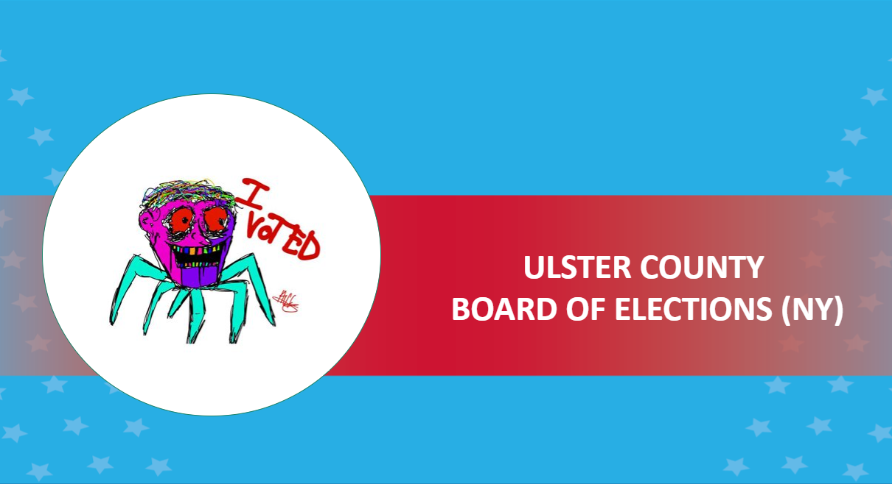

“I Voted” stickers are an opportunity for citizens to show their civic pride after voting. Sticker design competitions are also one way election offices can engage with the communities they serve. In recent years, an increasing number of states and local jurisdictions have used these “competitions” to further that engagement and connect the design of the “I Voted” stickers to the community. These efforts are in addition to many responsibilities of election officials and there may be a lot of questions before an office takes this on. With that in mind, EAC Commissioner Ben Hovland moderated a panel discussion on the importance of “I Voted” stickers, how the creativity design contests engage the community, and how successful these stickers and contests can be.
Participating in the discussion were Jackie Beaudry, City Clerk for Ann Arbor, Michigan; Erin Perrone, Deputy Director for the Carroll County Board of Elections in Maryland and previously at the Maryland State Board of Elections; and Commissioner Ashley Torres, from the Ulster County Board of Elections in New York.
One commonality between the experiences of the panelists was the way these competitions furthered election participation in the community. In addition to the direct engagement with the contests from participants and public voting on the entries, these contests also brought attention to other aspects of election administration, such as poll workers, voting options, and more.
Commissioner Hovland summed that ancillary benefit up with, “’I Voted’ sticker contests are both a nice opportunity to bring some fun and creativity to the office, but also great for community engagement and outreach at a time when we're looking for more ways to engage Americans to provide facts about how our elections run, to help people know who their state and local election officials are, and that they are the trusted source for accurate election information. ‘I Voted’ sticker contests are a potential tool for election officials to connect to their community.”
During the panel, Jackie Beaudry talked about the ideas she and her colleagues came up with to promote interest in voting, and how the Covid-19 pandemic affected community engagement for the competition.
“We actually embarked on this again, thinking the public had an interest and pride in our community, and then also to promote interest in the upcoming national election. We had introduced selfie stations. We had introduced a hashtag. And then we got the idea that what if people not just took a selfie at the polling place on Election Day?” said Ms. Beaudry on the origin and ideas of Ann Arbor’s sticker competition. “And then, when the pandemic hit, it really was embraced by the public. It was the art. The design piece of it was right in the midst of our stay home order in Michigan, so I think the students loved it. It was something to do at home, and so we just had a lot of community support for the project.”

Erin Perrone spoke on how the contest in Maryland collaborated with the fine arts community as well as students.
“I got to attend a meeting with all these fine arts teachers from different counties,” said Ms. Perrone on integrating the contest into school curriculums. “They were just as excited about it as I was. All these teachers put this into their program for the new fall semester.”
2022 was the second year for the Ulster County sticker design contest. Commissioner Ashley Dittus-Torres talked about how the entry, and eventual winner, for the contest went viral, due to its “non-traditional and alternative” design. She quickly noticed how many hits and votes the website was getting for the sticker. She and her colleagues embraced the design and attention the winning sticker received. The Ulster County sticker winner garnered considerable media attention from across the country including NPR, The New York Times, The Guardian and CNN to name a few.
“That's the reason why we liked it so much, because we sometimes feel like that sticker when we're doing elections,” said Ms. Dittus-Torres on the sticker design of a manic human head on a cartoonish spider body. “It sort of reflects our feelings and the feelings of our voters. So, we kind of thought, okay? Well, this could happen, and if it does happen that's fine. We’ll definitely embrace it, because it gave us so many opportunities to talk about all of our programs, all of our elections.”

Looking to create an “I Voted” sticker contest in your community? View the checklist below for some best practices.
“I Voted” Sticker Contest Best Practices Checklist
-
Provide a terms and conditions document, with rules and criteria clearly laid out.
-
Consider partnership with community organizations and schools to drive participation in the contest.
-
Reach out to press about the contest and winner, but also how the “I Voted” stickers are a form of community engagement for election offices.
-
Use cost-effective limitations if necessary for your budget, such as the number of colors used in the design.
-
Offer incentives for participation, voting on entries, and winning, such as gift cards or monetary prizes for the winners.
-
Work with your office IT department to make sure your voting procedure is in place, such as allowing for one vote per IP address, and the potential for an increase in volume to the website. If working with students on designs, talk to their parents to determine comfort levels for public attention.
The annual EAC Clearinghouse Awards has a category for “Creative and Original ‘I Voted’ Stickers.” One of the winners for the 2021 competition was the above trio of stickers from Maryland. Submit your own for the 2022 competition until February 28, 2023!
Watch this on-demand video on the EAC’s YouTube channel to hear their insights.